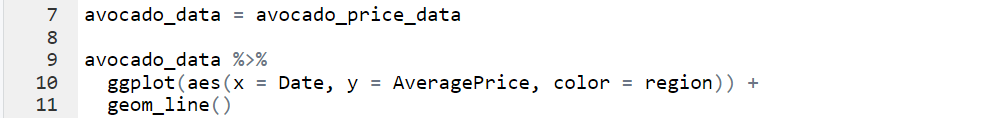
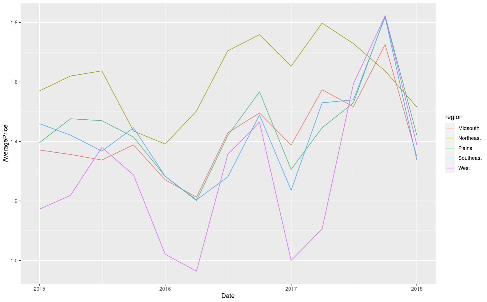
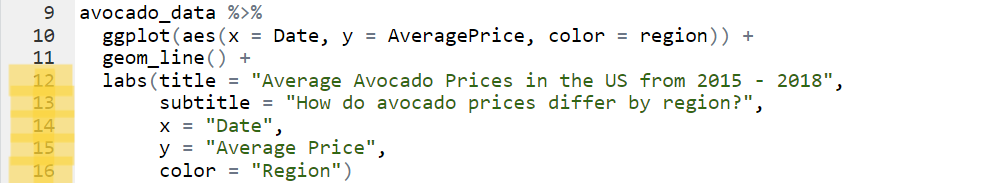
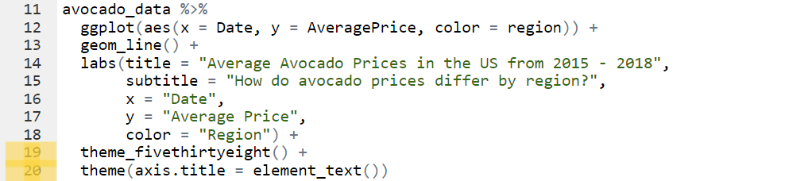
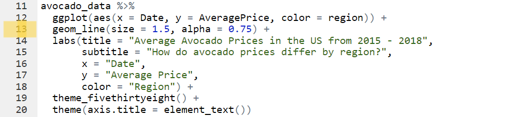
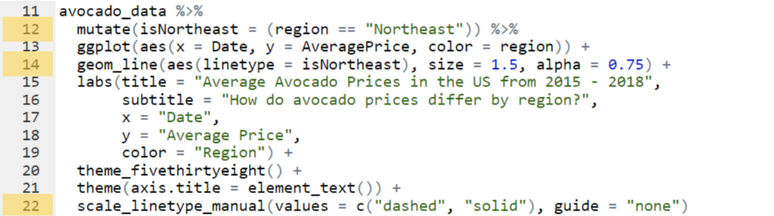
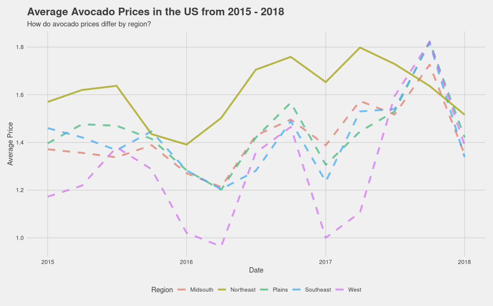
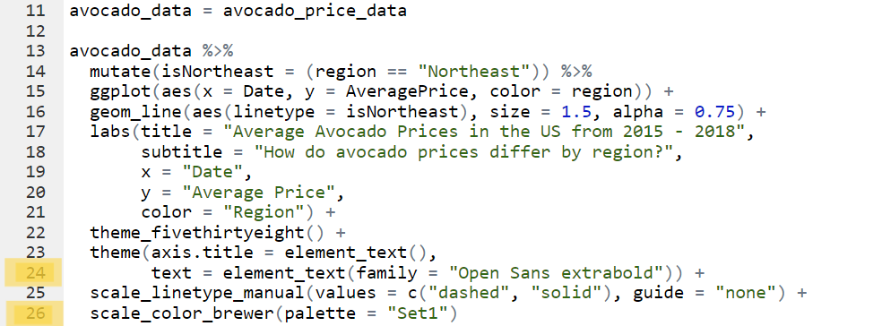
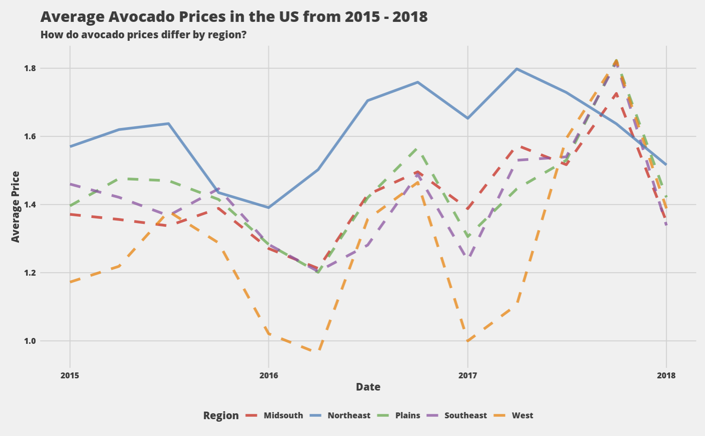

Avocado Project
Original Dataset hereP r o j e c t
I will be looking at the prices of Avocado's in different regions of USA (Midsouth, Northeast,
Plains, Southeast, West) from 2015 - 2018, and visualizing the change over time using R Programming.
I started by installing and loading ggplot2 and dplyr in to R. Ggplot2 is an open-source
package for data visualization in R that I will be using to produce a line graph. Dplyr is used
for data manipulation and also enables us to use '%>%' as a pipe to forward a value or result on
to the next function.
After uploading the dataset to R, I was able to plot the following line graph quick and easily using ggplot. The Date and Average Price are on the axis', and the lines are colour coded by region.

 Although this line graph is sufficient and achieves my aim of showing the change in avocado prices, I still think it is basic and the visualization can be improved. I will try to improve this graph by adding titles, adding a theme to the graph, enhancing the data I want to show, and editing the colours and fonts.
I will start by using 'labs' to add a title and subtitle to the graph, and modify the axis' and legends names. 
I then installed and loaded ggthemes, this is another R package that enables me to access additional themes. I used the 'fivethirtyeight' theme which slightly changed the feel and layout of the graph, removing some gridlines and moving the colour legend to the bottom of the graph. The theme set my axis titles to blanks, so I readded the titles using element text. 
I also increased the thickness and opacity of the lines by increasing line size to 1.5, and alpha to 0.75, to show each region line more clearly. 
I then enhanced the data that I wanted to highlight. For this graph, I wanted to show which region (Northeast) had the highest average price. I kept this Northeast line solid, whilst changing the rest to dashed lines. This was done by utilizing R's dyplr package and using its mutate function to create a new column which produces a True or False if the column's region is Northeast. I then made changes to the geom_line code, making the graph lines know to differentiate between Northeast data, and the rest of the data. We then need to add an additional line of code to manually change the line types to solid and dashed, and to remove the additional legend. 

I am happy with the improvements that I have made to this graph. I will just make some final aesthetic changes to the font and colour of the lines. I installed and loaded 'extrafont', which gives me access to additional fonts, I chose Open Sans extrabold as I wanted the title to be bold and striking. This was done by adding the chosen font in to the theme code we had already used earlier. For the line colours, I used ggplot's default palettes and chose a bright colour scheme to make the graph more visually appealing. 

A n a l y s i s
We can clearly see that the region with the highest average price is the Northeast (blue line), and the region
with the lowest average price is the West (orange line). A big reason for this is USA's heavy reliance on Mexico
for their avocados. In 2022, USA imported 1.3m metric tons of avocados from Mexico, whereas they only produced 156k metric
tons themselves. This will have a big effect on the price of avocados because the west of USA borders Mexico, this will
bring lower transportation costs compared to the northeast of USA.
Another factor making avocados cheaper in the West, is the vast majority of avocados grown in the US are from California,
where the West Coast produces a suitable climate for the growth of avocados. This produces lower prices in the West as
they will have local produce available, without any big transportation or import fees contributing to the price. We see
the opposite of this with the Northeast having the most expensive avocado, with the region being furtherest from Mexico
and the West of USA.
We see two big peaks at the back end of the year in both 2016 and 2017, where the avocado price rises sharply. The rise in
late 2016 can be explained by many
avocado producers' in Mexico going on strike
in October 2016, causing avocados to triple in price in some US cities.
The 2017 peak can be explained by the reduced harvest in Mexico and California
in mid- to late-2017, causing prices to surge again.
Other Graphs